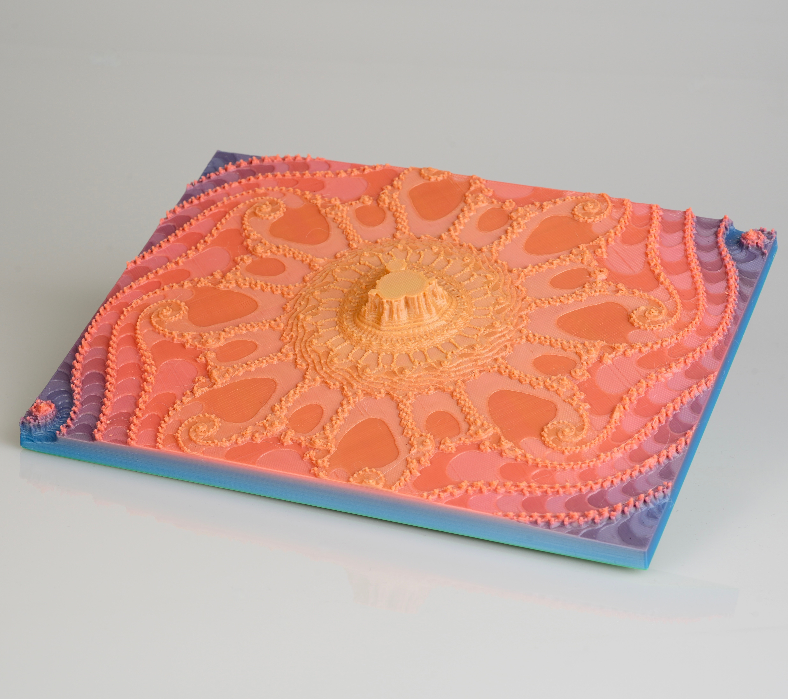
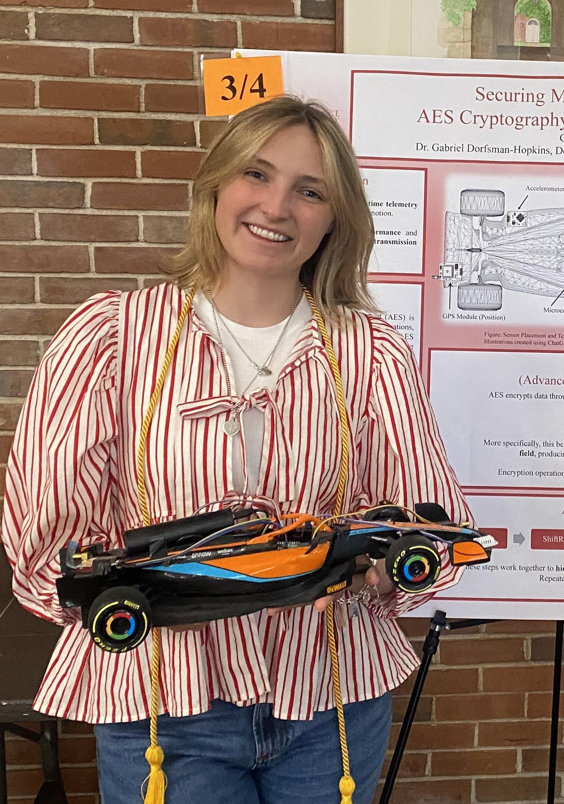

Undergraduate Research
Undergraduate research is one of the most rewarding parts of my work. My students pursue projects spanning algebra, geometry, cryptography, mathematical illustration, computation, digital fabrication, and art. Together we have produced peer-reviewed publications, mathematical exhibitions, open-source software, classroom materials, and interactive installations. Many of these collaborations take place in the Explore Lab Makerspace and involve students from mathematics, computer science, art, music, geology, economics, and engineering.
If you're a SLU student interested in research, please reach out to me (my email is right there in the sidebar). I'd love to meet and find a way to work together. See below for a selection of projects I've mentored over the years.

Visualizing Geometric Concepts through Light and Reflection
Created infinity boxes from Platonic solids to visualize hyperbolic 3-space.

3D Printing Escape Velocities in the Mandelbrot Set
Designed a continuous escape time algorithm and used it to 3D print fractals.
Outcome: Presented at the ICERM Illustrating Math Reunion art show.

Visualizing Group Actions on Platonic Solids
Visualized the action of the octahedral group on the cube with an interactive physical model.

Twenty-Seven
Built a sculpture depicting the 27 lines on the cubic.
Outcome: Presented at the annual meeting of the German Mathematical Society and published in w/k: Between Science and Art.

Can You Hear the Shape of an Instrument?
Designed and built an instrument with a fractal sound hole.

Securing Motorsport Telemetry with AES Cryptography
Programmed an advanced cryptosystem installed in an RC car for secure data transmission in real time.

Building Intuition Through Models of Solids of Revolution
Designed models and in-class activities to study solids of revolution in integral calculus.
Outcome: Used in our Math 136 courses.

Linear Algebra through Geology
Designed class activities exploring geological applications for linear algebra.
Outcome: Used in our Math 217 courses.

Bohemian Eigenvalue Starscapes
Explored the aesthetic geometry of eigenvalues of integer matrices with high-performance computing.
Outcome: Exhibited and published in the 2024 Joint Math Meetings art show.

Rigid Algeraic Starscapes
Art depicting algebraic integers.
Outcome: Presented at Bridges and published in the Journal of Mathematics and the Arts.

Fractal Antennae
Made clothing with embedded fractal circuitry embroidered in.

Making an Enigma Machine
Built an Enigma machine with physical and digital components.

A Tripartite Elliptic Curve Diffie-Hellman
Programmed an elliptic curve cryptosystem using the Weil pairing.

Shor's Algorithm and Quantum Cryptography
An expository piece on how quantum computing can attack modern cryptosystems.

Graph Centrality's Impact on Economic Welfare
Original research using graph theoretic methods to study global trade.
Outcome: In preparation for publication.

Divisibility Properties of Reversed Digit Pairs
Original research about patterns that arise when digits are rearranged.
Outcome: Presented at the Joint Math Meetings and MAA Seaway Section.

Tribinomials, Fibinomials, and Generalizations
Original research on new combinatorial sequences.

Galois Theory and the Insolvability of the Quintic
Expository piece on Galois' classical proof of the insolvability of the quintic.

A Comic on Moduli Spaces
Made a comic describing moduli spaces using pizza as an analogy.